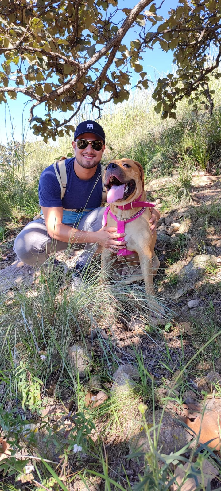

Para comenzar
¿Quién soy?
Soy un joven de 25 años, originario de México, especificamente de Guadalajara Jalisco, en desarrollo de aprender habilidades para el desarrollo web, interesado en superarse cada dia mas. Actualmente trabajo como ingeniero de desarrollo o ingeniero de proyectos. Practicamente hago la gestion de proyectos para diferentes empresas, en las cuales mis principales actividades son:
- Gestion de tiempos para produccion.
- Validación de proveedores.
- Purebas de productividad.
- Proyectos de ahorro.
- Compra de herramentales.
Estudios y experiencia laboral
Comienzos
Comence a trabajar desde muy temprana edad, siempre me enseñaron a ganarme mi dinero y con eso comprarme mis juguetes o cosas que yo quisiera. Empece a trabajar de mesero a la edad de 12 años en un puesto de tacos, me iba bien pero casi siempre me ganaba el hambre y terminaba comiendome en los tacos las propinas que me dejaban los clientes. Sin embargo, esto me ayudo mucho de experiencia para asi aprender a no depender de nadie.
Chofer de uber y chofer privado
Posteriormente en la peparatoria mientras estudiaba una carrera tecnica (Tecnologo profesional en mecanica industria) comencé a trabajar como chofer de uber. Comence a laborar en ese negocio recien cumplí los 18 para poder ser acreedor a mi licencia de conducir, en ese tiempo era un tabajo que se acomodaba mucho a mis horarios, ya que, en tiempos libres o cuando no tenia una clase, podia trabajar sin descuidar el estidudio.
Trabaje como chofer de uber durante dos años aproximadamente. Posteriormente fui contratado por grupo ALSEA (Starbucks, BurgerKin, etc) conmo chofer privado por lo que tenia que llevar a los chicos de diferentes sucursales a sus respectivas casas, estoy lo hacia de noche, asi que por el dia een la mañana iba a la escuela y en la noche trabajaba, fue un tiempo dificil en lo que me acostumbre a los horarios
Oportunidades de extender mi conociemiento con mis gustos
Posteriormente entre a la universidad y segui trabajando como chofer privado casi toda la universidad, hasta que 1 año y medio antes de salir de la caarrera comence a buscar otro trabaj, pero fue sin exito ya que estabamos en plena pandemia, asi que le sugerí a un tio trabajar para el en su restaurante en Chiapas, como las clases aun eran en linea, quise aprender de nuevas experiencias. Dure al rededor de 6 meses por que en mi escuela ya habian dado el aviso de ue regresariamos a clases presenciales, por lo que tuve que regresar a Guadalajara.
Despues de eso quise seguir buscando mas trabajo y un primo me propueso trabajar para el en su taller mecanico, (siempre me han gustado los carros y la mecanica) por lo que vi la oportunidad de aprender sobre algo que me gusta y asi fue, arregle y vi carros que nunca pense hacerlo, como un Porsche Carrera 911 del 84, el cual nos costo mucho trabajo, pero creo que fue de mis favoritos.
Actualidad
Y para finalizar a un año de salir de la universidad aplique para un puesto de becario en la empresa en la que actualmente trabajo, dure los primeros 6 meses de prueba y afortunadamente me dieron el puesto titular con estancia indefinida y es mi actual trabajo.
Gustos y hobbies
Principalmente soy una persona activa, me gustasn los deportas, explorar cosas y lugares nuevos, extraños y poco conocidos. Soy amanete de la natualeza y del campo. Me encanta salir a pasear con mi perrita Maya a quien podan ver en las siguientes imagenes

Como pueden darse cuenta es una perrita bastante grande, y le tengo mucho aprecio, me ha acompañado en bastantes aveenturas y es muy protectora con los de la familia.
Seres queridos y personas importantes en mi vida
Ahora toca el turno de presentar a las personas mas importantes de mi vida.
Empezando por la persona que me a compañado en casi toda mi vida, mi hermano.
En el recorrido de la vida, a menudo encontramos a personas que desempeñan roles cruciales en nuestra búsqueda de autodescubrimiento y crecimiento personal. En mi caso, este guía incondicional ha sido mi hermano menor. Aunque la dinámica entre hermanos puede variar, la presencia constante de mi hermano en mi vida ha sido un faro de luz que ha iluminado mi camino hacia la autenticidad y la madurez.
Desde temprana edad, mi hermano menor se convirtió en un maestro inadvertido en el arte del desapego y la adaptabilidad. Sus ojos curiosos y su espíritu inquisitivo me recordaban la importancia de mantenernos abiertos a nuevas experiencias y perspectivas. A través de su inocencia, me enseñó a dejar atrás las preocupaciones triviales y a abrazar la alegría simple de cada momento presente. Cada risa compartida y aventura improvisada era una lección en sí misma: la lección de abrazar la vida con valentía y sin prejuicios.
Ahora les presentare a quienes fueron como mis segundas madres.
Las tías abuelas, esos pilares de sabiduría y cariño que iluminan nuestras vidas con su presencia, merecen un lugar especial en nuestros corazones. Son testigos vivos de la historia, depositarias de experiencias acumuladas a lo largo de los años y portadoras de un amor incondicional que desborda cualquier barrera generacional.
En primer lugar, es importante resaltar el inmenso conocimiento que estas mujeres poseen. Sus vidas han atravesado épocas de cambios significativos, desde momentos de incertidumbre hasta avances tecnológicos que hubieran parecido inimaginables en su juventud. Escuchar sus relatos es como abrir un libro de historia personalizado, donde cada capítulo contiene valiosas lecciones aprendidas de las distintas etapas de sus vidas. Sus anécdotas y consejos se convierten en un tesoro invaluable que nos conecta con nuestras raíces y nos brinda una perspectiva única sobre cómo ha evolucionado el mundo.
Ahora la persona quien a cuidado de mi desde antes de nacer, mi mamá
En el viaje de la vida, pocos vínculos son tan profundos y significativos como el que compartimos con nuestras madres. La figura materna no solo nos trae al mundo, sino que también desempeña un papel crucial en nuestro crecimiento personal y en la formación de nuestra identidad. Mi madre, con su amor incondicional y su guía constante, ha sido el cimiento sólido sobre el que he construido mi camino hacia un camino construido por mi mismo
Desde mi infancia, la presencia de mi madre ha sido una fuente inagotable de apoyo y consejo. Su sabiduría, ganada a través de las experiencias de la vida, ha sido mi faro en momentos de duda y confusión. A través de sus palabras cuidadosamente elegidas y su ejemplo vivido, he aprendido la importancia de la compasión, la perseverancia y el amor propio. Cada desafío que he enfrentado ha sido más llevadero gracias a su guía constante y su capacidad para ver el potencial en mí incluso cuando yo no podía.
Al ser una persona de liderazgo, me ha transmitido todo tipo de conocimiento que he podido apliocar en mi carrera profesional, lo cual le agradezco muchisimmo por todos sus consejos y me siento sumamente orgulloso de ella.
Y por ultimo pero no por eso menos importante la persona por la que ultimamente estoy mas feliz que nunca, de la que me siento muy orgulloso por lo que ha logrado, todo su esfuerzo y dedicasión que siempre demuestra en todo lo que hace. Mi novia.
En la travesía de la vida, encontrar un compañero que te comprenda, te respalde y te impulse a ser la mejor versión de ti mismo es un regalo invaluable. Mi novia, con su amor genuino y su apoyo constante, ha sido mi roca en momentos de alegría y desafío, y juntos hemos experimentado un crecimiento mutuo que ha enriquecido nuestras vidas.
Desde que entramos en esta relación, he encontrado en mi novia a alguien que no solo comparte mis risas y alegrías, sino también mis luchas y desafíos. Su empatía y capacidad para escucharme sin juzgarme me han brindado un espacio seguro donde puedo expresar mis pensamientos y sentimientos más profundos. A través de nuestras conversaciones honestas, he descubierto nuevas perspectivas y he aprendido a enfrentar mis propias inseguridades con valentía.
El apoyo incondicional de mi novia ha sido un faro de luz en momentos de duda y confusión. Su creencia constante en mí y en mis habilidades me ha dado la confianza para perseguir mis objetivos con audacia. A través de sus palabras alentadoras y su capacidad para ver lo mejor en mí, he aprendido a valorarme a mí mismo y a abrazar mis imperfecciones como parte de lo que me hace único.